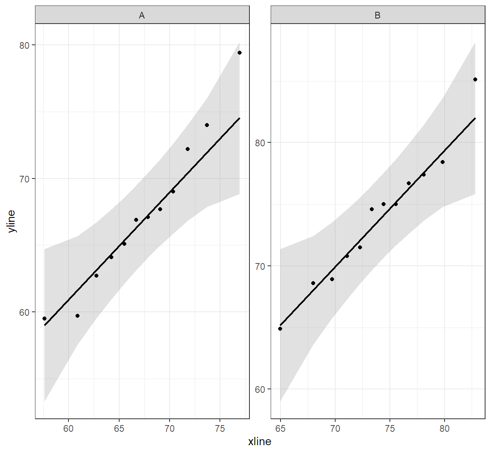
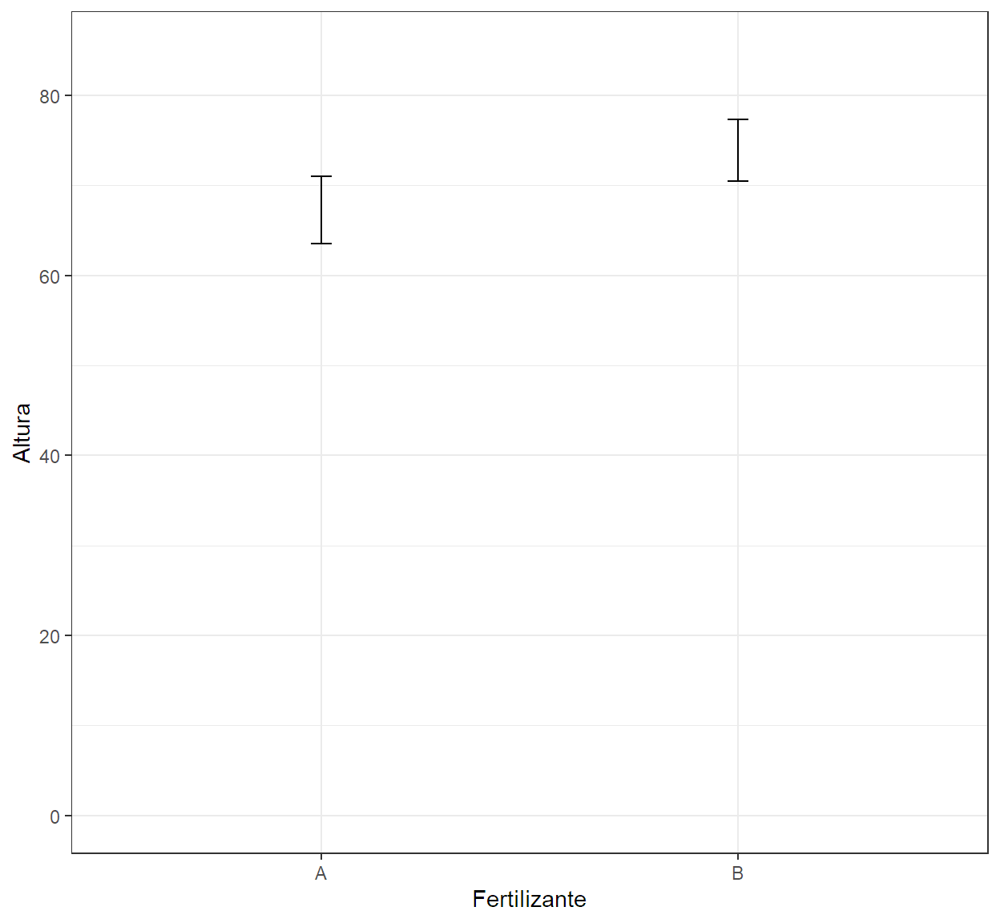
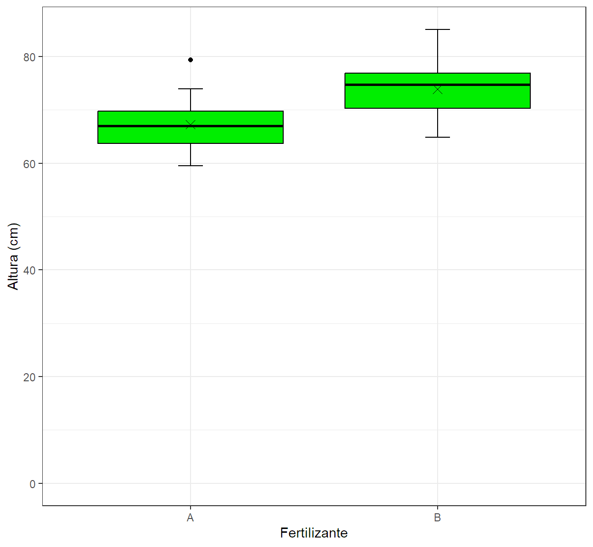

Code
FertA<-c(74,67.1,66.9,65.1,69,67.7,62.7,59.7,79.4,72.2,64.1,59.5)La estadística inferencial juega un papel crucial en la agronomía al permitirle a los profesionales realizar estimaciones y tomar decisiones basadas en datos limitados. Esta rama de la estadística aborda:
La estimación por intervalos que son herramientas utilizada para construir rangos dentro de los cuales se espera que se encuentre un parámetro poblacional, como el rendimiento de un cultivo o la eficacia de un tratamiento, proporcionando una medida de precisión y confianza en los resultados obtenidos a partir de una muestra.
La prueba de hipótesis que es una herramienta fundamental para evaluar afirmaciones o teorías sobre las poblaciones, como determinar si un nuevo fertilizante mejora significativamente el crecimiento de las plantas en comparación con un fertilizante estándar.
Estas pruebas asumen que la distribución de los datos siguen un comportamiento en particular.
Prueba t para 2 muestras independientes:
Propósito: Compara las medias de dos grupos.
Supuestos: Distribución normal de los datos de ambas muestras y que las varianzas sean homogéneas entre ambos grupos (homocedasticidad).
Función en R: t.test() con argumentos paired=FALSE y var.equal=TRUE .
Prueba t welch para 2 muestras independientes:
Propósito: Compara las medias de dos grupos.
Supuestos: Distribución normal de los datos de ambas muestras y que las varianzas sean diferentes entre ambos grupos (heterocedasticidad).
Función en R: t.test() con argumentos paired=FALSE y var.equal=FALSE .
Prueba t de Student para muestras pareadas:
Propósito: Compara las medias de dos grupos de mediciones relacionadas (e.g., mediciones antes y después del tratamiento en los mismos sujetos).
Supuestos: Normalidad de las diferencias entre las mediciones.
Función en R: t.test() con argumentos paired=TRUE
Estas pruebas no asumen una distribución de los datos ajustada a la distribución normal y son la alternativa a las pruebas paramétricas y semiparamétricas.
Prueba de Mann-Whitney Wilcoxon:
Propósito: Compara las medianas de dos grupos.
Uso: Alternativa a la prueba t para muestras independientes cuando los datos no son normales.
Supuestos: No requiere normalidad, pero los datos deben ser ordinales o continuos.
Función en R: wilcox.test() con argumento paired=FALSE.
Prueba de Wilcoxon:
Propósito: Compara las medianas de dos grupos de mediciones relacionadas.
Uso: Alternativa a la prueba t para muestras pareadas cuando los datos no son normales.
Supuestos: No requiere normalidad, pero los datos deben ser ordinales o continuos.
Función en R: wilcox.test() con argumento paired=TRUE.
Proporcionar una comprensión integral de las herramientas y funciones básicas del entorno de R y RStudio para la estadística inferencial con el fin de que los estudiantes desarrollen habilidades que le permitan:
Contexto: Un agrónomo está investigando el impacto de un fertilizante en el crecimiento de plantas de maíz. Para ello selecciono 1 parcela de 50 m² y sembró 12 semillas de maíz a las que se aplicó 100 kg/ha del fertilizante. Al final del período de crecimiento midió la altura de las plantas (en cm).
FertA<-c(74,67.1,66.9,65.1,69,67.7,62.7,59.7,79.4,72.2,64.1,59.5)El test de normalidad shapiro & wilks contrasta si las observaciones de una muestra aleatoria provino de un población con distribución normal. Este test es potente para probar la normalidad de un conjunto de datos siempre que se tenga máximo 2000 valores muestrales. A diferencia de otros test como el test K-S no permite probar la bondad de ajuste de los datos para distribuciones distintas de la distribución normal.
Estadístico de prueba:
\(W=\frac{b^2}{\sum(x_i-\bar{x})^2}\)
Hipótesis estadísticas:
\(H_0:=\) Los datos provienen de una población que se ajusta a la distribución normal.
\(H_1:=\) Los datos provienen de una población que no se ajusta a la distribución normal.
Regla de Interpretación.
Valores de p mayores o iguales al nivel de significancia respaldan la \(H_o\). Mientras que valores de p menores al nivel de signficancia respaldan la \(H_1\).
shapiro.test(FertA)
Shapiro-Wilk normality test
data: FertA
W = 0.95692, p-value = 0.7392El argumento conf.level=k se emplea para indicar el nivel de confianza de la estimación por intervalo.
t.test(FertA,conf.level = 0.95)
One Sample t-test
data: FertA
t = 40.005, df = 11, p-value = 2.889e-13
alternative hypothesis: true mean is not equal to 0
95 percent confidence interval:
63.58151 70.98515
sample estimates:
mean of x
67.28333 Contexto: Un agrónomo está investigando el impacto de dos tipos diferentes de fertilizantes en el crecimiento de plantas de maíz. Para ello selecciono 2 parcela de 50 m² cada una y similares en términos de suelo, ubicación y condiciones climáticas. En cada parcela sembró 12 semillas de maíz y les aplicó 100 kg/ha del fertilizante correspondiente. Al final del período de crecimiento midió la altura de las plantas (en cm).
library(ggplot2)
library(car)
library(tidyverse)
library(qqplotr)
library(descriptr)FertA<-c(74,67.1,66.9,65.1,69,67.7,62.7,59.7,79.4,72.2,64.1,59.5)
FertB<-c(77.4,75,74.6,75,68.9,78.4,71.5,68.6,70.8,64.9,85.1,76.7
)
Fertilizante<-c(rep("A",12), rep("B",12))
Altura<-c(FertA,FertB)
Datos<-data.frame(Fertilizante, Altura)Al tratarse de un diseño de dos muestras independientes se verifica tanto el supuesto de normalidad con el test de shapiro & wilks y la homocedasticidad con la prueba de razón de varianzas.
Estadístico de prueba:
\(W=\frac{b^2}{\sum(x_i-\bar{x})^2}\)
Hipótesis estadísticas:
\(H_0:=\) Los datos provienen de una población que se ajusta a la distribución normal.
\(H_1:=\) Los datos provienen de una población que no se ajusta a la distribución normal.
Regla de Interpretación.
Valores de p mayores o iguales al nivel de significancia respaldan la \(H_o\). Mientras que valores de p menores al nivel de signficancia respaldan la \(H_1\).
ggplot(data = Datos,aes(sample=Altura))+
stat_qq_band(alpha=0.3)+
stat_qq_point()+
stat_qq_line()+
facet_wrap(.~Fertilizante,ncol = 2,scales = "free")+
theme_bw()
shapiro.test(FertA)
Shapiro-Wilk normality test
data: FertA
W = 0.95692, p-value = 0.7392shapiro.test(FertB)
Shapiro-Wilk normality test
data: FertB
W = 0.97185, p-value = 0.9292Estadístico de prueba:
\(F=\frac{S_1^2}{S_2^2}\)
Hipótesis estadísticas:
\(H_0:=\) La variación de la variable respuesta es la misma en ambos grupos.
\(H_1:=\) La variación de la variable respuesta entre ambos grupos es diferente.
Regla de Interpretación.
Valores de p mayores o iguales al nivel de significancia respaldan la \(H_o\). Mientras que valores de p menores al nivel de signficancia respaldan la \(H_1\).
var.test(FertA,FertB)
F test to compare two variances
data: FertA and FertB
F = 1.1737, num df = 11, denom df = 11, p-value = 0.7953
alternative hypothesis: true ratio of variances is not equal to 1
95 percent confidence interval:
0.3378683 4.0769167
sample estimates:
ratio of variances
1.173653 Objetivo: Realizar un contraste de hipótesis para determinar si hay una diferencia significativa en la altura promedio de las plantas entre los dos tipos de fertilizantes.
Prueba parámetrica prueba t.
Justificación. Se trata de un diseño de muestras independientes, con comportamiento normal en la variable de respuesta y con varianzas iguales.
El argumento alternative es para indicar el tipo de contraste, “two.sided” para dos colas, “greater” para unilateral a la derecha, “less” para unilateral a izquierda.
Hipótesis estadísticas:
\(H_0:=\) No hay una diferencia significativa en la altura promedio de las plantas entre los dos tipos de fertilizantes
\(H_1:=\) Hay una diferencia significativa en la altura promedio de las plantas entre los dos tipos de fertilizantes
Regla de Interpretación.
Valores de p mayores o iguales al nivel de significancia respaldan la \(H_o\). Mientras que valores de p menores al nivel de signficancia respaldan la \(H_1\).
t.test(FertA,FertB,paired = FALSE,var.equal = TRUE,
alternative = "two.sided")
Two Sample t-test
data: FertA and FertB
t = -2.8944, df = 22, p-value = 0.008412
alternative hypothesis: true difference in means is not equal to 0
95 percent confidence interval:
-11.371852 -1.878148
sample estimates:
mean of x mean of y
67.28333 73.90833 ## Hacer un gráfico.
ggplot(Datos,aes(Fertilizante,Altura))+
stat_summary(fun.data = mean_cl_normal, geom ="errorbar",
width=0.05)+
theme_bw()+ylim(c(0,max(Altura)))
## Hacer un gráfico
ggplot(data = Datos,aes(x = Fertilizante,y = Altura))+
stat_boxplot(geom='errorbar', linetype=1, width=0.1)+
geom_boxplot(fill="green2",color="black")+
stat_summary(fun=mean, geom="point", size=3, shape=4)+
theme_bw()+ labs(y="Altura (cm)",x="Fertilizante")+
ylim(c(0,max(Altura)))
Conclusión. A partir de los resultados y con un nivel de significancia del 0.05 hay evidencia estadistica para respaldar la idea de que hay una diferencia significativa en la altura promedio de las plantas entre los dos tipos de fertilizantes (t=-2.89, p=0.008), siendo el fertilizante B el que propicia una mayor altura, \((IC95[-11.3 : -1.88])\).
Aplicar técnicas de estadística inferencial en R para analizar estimar parametros poblacionales y contrastas afirmaciones, que le permitan la toma de desiciones fundamentada en los datos.
Para estimar el rendimiento promedio del maíz bajo el efecto de un herbicida, se toma una muestra de tamaño 40 y se obtiene los siguientes rendimientos en qq/ha. Construir con los datos los intervalos de confianza del 95% y 99% para 𝛍.
75.8 - 73.0 - 56.9 - 72.2 - 29.6 - 32.5 - 64.8 - 96.2 - 77.5 - 55.0 - 44.9 - 68.7 42.3 - 61.0 - 33.1 - 32.6 - 47.9 - 57.2 - 59.2 - 89.8 - 71.0 - 62.1 - 62.9 - 51.3 - 84.2 - 72.0 - 79.4 - 78.4 - 81.3 - 74.6 - 51.2 - 54.0 - 54.7 - 49.9 - 53.5 - 49.6 - 58.3 - 48.3 - 73.3 - 73.4
El espárrago es una planta perenne cuyo cultivo comercial puede tener una duración de 15 años y su implantación es costosa. Dada la extensión del sistema radicular, la profundidad del suelo es fundamental, considerándose indispensable contar con un promedio mínimo de 80 cm de sustrato permeable. Se realizan 14 determinaciones de la profundidad del sustrato permeable (en cm) en puntos tomados al azar en dos campos (A y B). Los resultados fueron los siguientes:
A: 72 - 78 - 86 - 78 - 90 - 104 - 76 - 70 - 83 - 75 - 90 - 81 - 85 - 72
B: 78 - 82 - 68 - 68 - 74 - 81 - 85 - 73 - 75 - 89 - 100 - 91 - 82 - 75
A partir de los intervalos de confianza al 95% determinar si estos campos son aptos para el cultivo.
Se acepta que después de 3 años de almacenamiento el vigor de un arbusto forrajero medido como peso seco alcanzado a los 20 días de la germinación es de 45 mg promedio. Un nuevo método de almacenamiento se propone para aumentar el vigor. Se evalúan para ello 20 lotes de 10 semillas cada uno y al cabo de 3 años se las hace germinar, obteniéndose los siguientes resultados de peso seco promedio a los 20 días: 49 - 43 - 56 - 57 - 59 - 65 52 - 51 - 50 - 55 - 60 - 65 - 53 - 57 - 67 - 56 - 53 - 37 - 45 - 42. Realizar una prueba de hipótesis para determinar la aficacia del nuevo método de almacenamiento con un nivel de significación α = 0.01.
Se está experimentando con un herbicida en maíz, y para ponerlo a prueba se evalúan los rendimientos de 12 parcelas experimentales. En 6 de ellas se utilizó el nuevo herbicida y en las restantes un herbicida tradicional como control. Los resultados del ensayo, expresados en quintales por hectárea, son los siguientes:
Nuevo herbicida: 68.1 - 74.6 - 64.4 - 69.2 - 61.8 - 57.9
Viejo herbicida: 64.7 - 62.5 - 66.8 - 69.2 - 53.9 - 58.5
Realizar un contraste de hipótesis para determinar el efecto del herbicida. Utiliza un nivel de significación de significación α = 0.10
Para probar la eficacia de un tratamiento de poda en un bosque de Raulí, un investigador decide comparar el incremento del diámetro de los fustes de los árboles podados, con el incremento en árboles sin poda. Para ello se localizan 20 lotes de los cuales a 10 se los poda y al resto no. Al cabo de 3 años se obtienen los incrementos promedio para cada lote siendo los resultados los siguientes (en cm):
Stand con poda: 0.29 - 0.305 - 0.28 - 0.32 - 0.35 - 0.297 - 0.30 - 0.298 - 0.315 0.324
Stand sin poda: 0.30 - 0.303 - 0.27 - 0.30 - 0.32 - 0.31 - 0.28 - 0.302 - 0.298 0.301
Realizar un contraste de hipótesis para probar la eficacia del tratamiento de poda. Utiliza un nivel de significación de significación α = 0.05
Un agrónomo está evaluando el efecto de dos métodos de cultivo en la fertilidad del suelo. Se tomaron muestras de suelo en parcela de 20 m² al inicio del estudio y después de 6 meses de aplicar cada método de cultivo (Cultivo tradicional y Cultivo en no-till) para determinar el contenido de nitrógeno (mg/kg). Los datos fueron los siguientes:
Antes del tratamiento (mg/kg): 45, 44, 46, 47, 45, 44, 46, 45, 47, 44
Después del tratamiento (mg/kg): 55, 54, 56, 57, 55, 54, 56, 55, 57, 54
Realizar un contraste de hipótesis para determinar si hay un aumento significativo en el contenido de nitrógeno en el suelo después de aplicar el cultivo en no-till. Utiliza un nivel de significación de 0.01.
Abra el programa y cree un documento .qmd en formato word.
Cargue las librerías necesarias.
Resuelva los prolemas 1 y 5 para ello:
Describa el contexto del problema (Objetivo) y la planeación (Elementos del diseño, Hipótesis estadísticas, Tipo de contraste y diseño de muestras)
Ingrese los datos y haga los ajustes requeridos para los análisis.
Verifique los supuestos de la técnica e interpretelos.
Ejecute la técnica adecuada y gráfique la información. Analice los resultados.
Abra el programa y cree un documento .qmd en formato word.
Cargue las librerías necesarias.
Resuelva los prolemas 2, 6 y 4 para ello:
Describa el contexto del problema (Objetivo) y la planeación (Elementos del diseño, Hipótesis estadísticas, Tipo de contraste y diseño de muestras)
Ingrese los datos y haga los ajustes requeridos para los análisis.
Verifique los supuestos de la técnica e interpretelos.
Ejecute la técnica adecuada y gráfique la información. Analice los resultados.